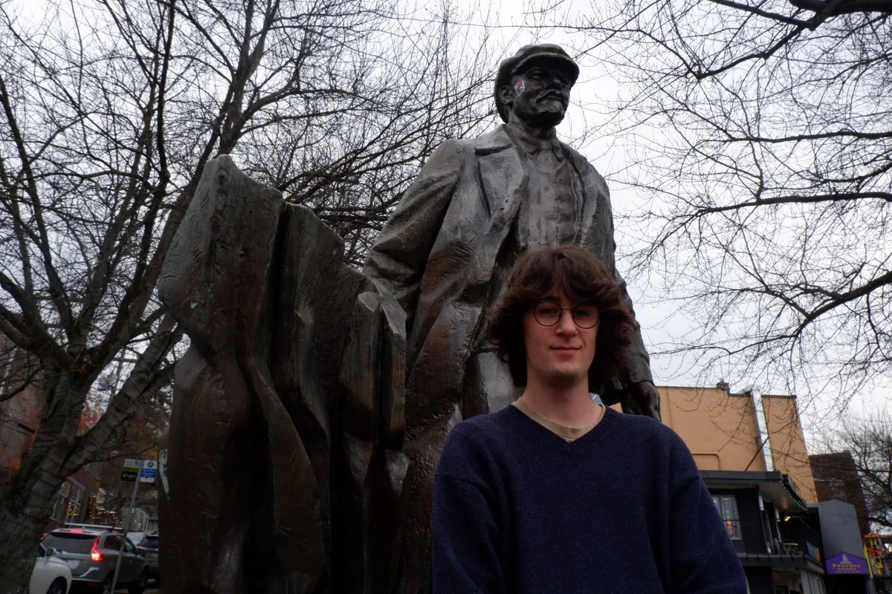
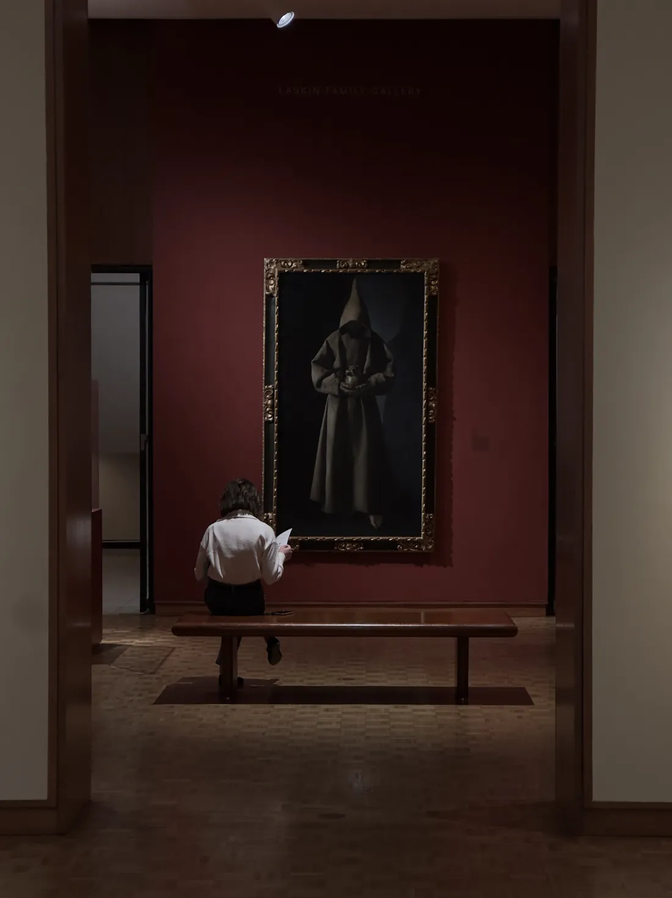

Ethan Crawford
GIS Specialist · Cartography · Remote Sensing · Urban Planning
I recently graduated from the University of Illinois Urbana-Champaign with a B.S. in Geographic Information Science and minors in Urban Planning and Global Labor Studies.
I like photography, my steel frame bike, native plant identification, urban spatial analysis, looking at birds, Pittsburgh sports, et cetera et cetera...
I'm now looking for GIS job opportunities, so make sure to check out my projects and resume.

A picture I took at the Milwaukee Art Museum